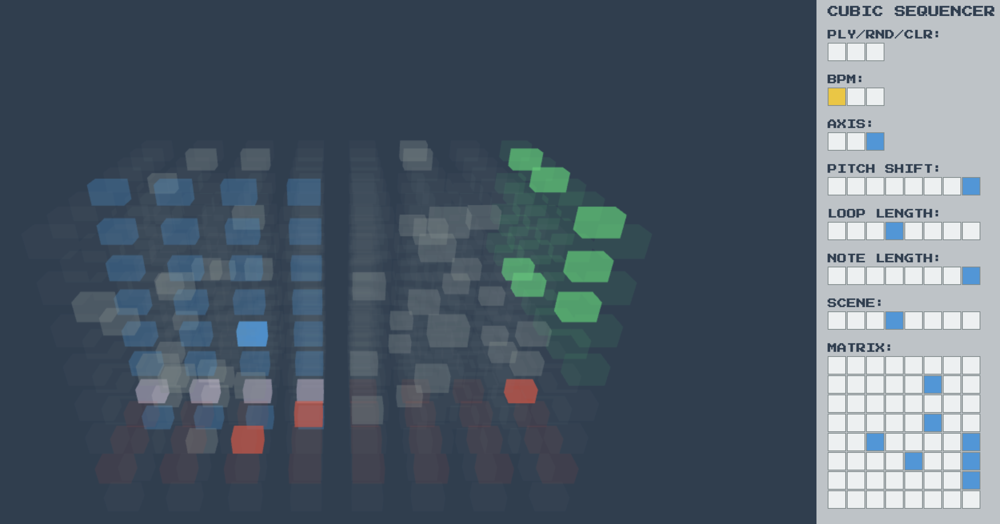
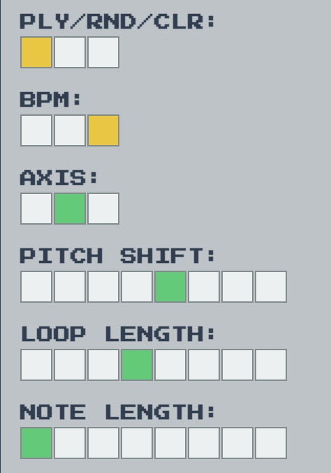
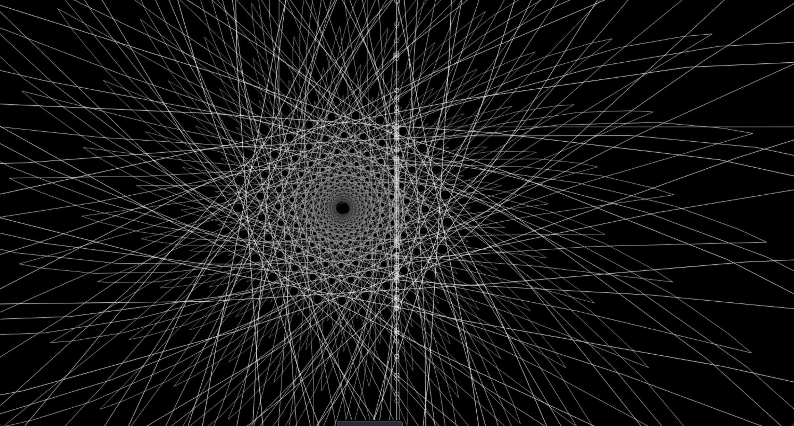
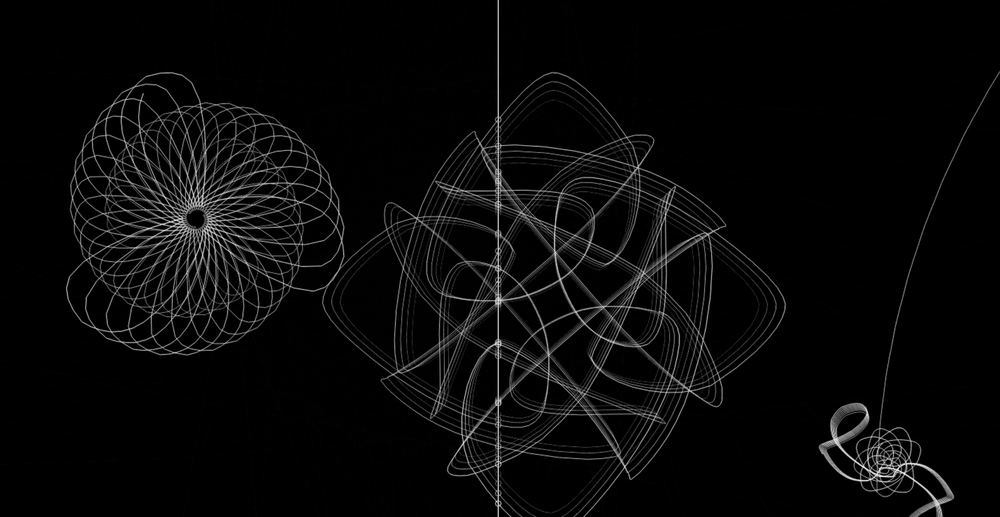
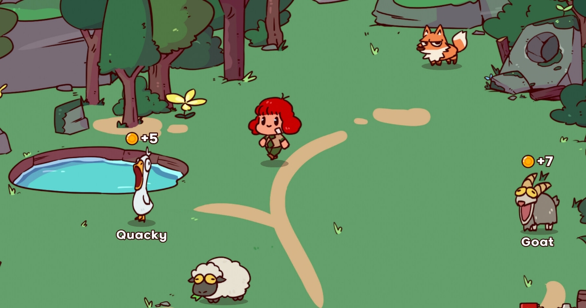
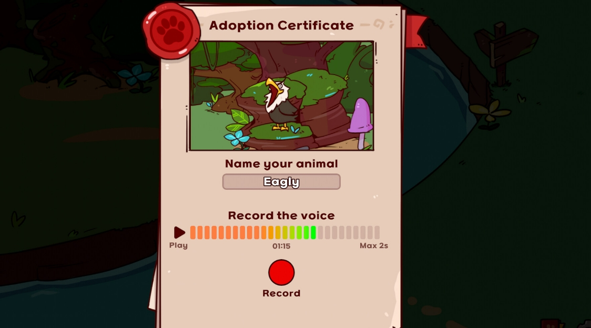
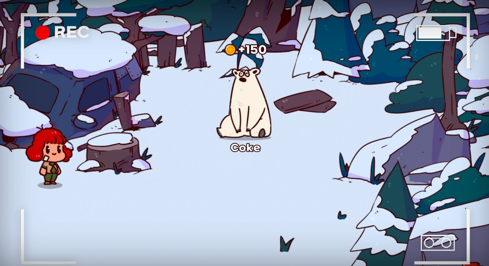
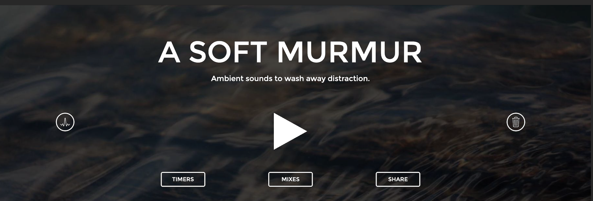
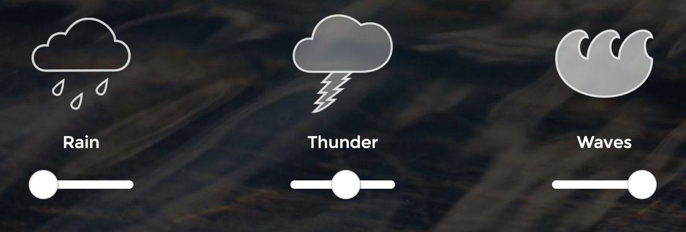

Design Scenario Analysis
The scenario asks for a way for young children with minimal language skills to explore music. Traditional browser-based instruments can be intimidating because they often require users to understand musical concepts such as notes, rhythm, chords, and loops. Even if an interface is simple, it may not be engaging enough for toddlers to be interested.
The purpose of this project is not mainly to teach toddlers how to make music, but for them to explore sound and music-making and do it without needing to understand musical terminology. The interaction will be based on objects that toddlers are already familiar with, such as, everyday objects and environment like bathroom, kitchen, playroom. Children will discover how different sounds can be combined to create music through playing. The project aims to make music fun, familiar and unintimidating, helping children to learn about music without feeling the pressure of rules without defining what is correct or incorrect.
One tension I would like to address is that this project allows a child to be flexible with no rule in music making. However, there is a possibility that they might layer every sound at once, producing disturbing noises instead of music. That is a reason why I add hover preview function to encourage listening and analyzing before adding, which is a low-pressure way to make them choose without any correction.
Project Overview
This project is a browser-based musical toy for toddlers where everyday objects become musical instruments. Children can listen to the sound of each object by clicking on it. These sounds will play in a loop until unclicked, and it can be combined and layered to create simple musical patterns. For example, a child could interact with objects in a kitchen by clicking and combining sounds from a spoon, pan, and kettle to create their own music. This project directly answers the scenario by replacing complex musical control with simple interaction using visuals like familiar objects. The system allows them to discover concepts such as, rhythm, repetition, and layering through listening, trying, combining sounds rather than teaching through instructions.
Project Framing
The project is framed as a simple, playful browser-based toy rather than a technical instrument. The main concept is to encourage children to learn about music through everyday objects and play-based activities without any rules that are often associated with formal music learning. The experience should be fun, easy, toy-like, where there’s no wrong way to interact. For the technical part, it is simple and only using necessary technology as shown below:
Internal
| Items | Reason |
|---|---|
| Environment | Background image of the scene such as, kitchen, bathroom, playground |
| Interactive objects | Clickable stickers represent everyday objects |
| Interaction | Using a mouse to click and hover over the objects. |
| HTML, CSS, JavaScript | Main browser technology |
External
| Items | Reason |
|---|---|
| Multiplayer | It is unnecessary for toddler that playing alone |
| Additional devices | Adding more device like keyboards,VR or controller reduce learnability of a toddle |
| AI-generated sound | Sound should come from real object so they can recognize the sound they known and, in this browser, toddlers make sound by clicking there is no need to generate new sound. |
Interaction Design Analysis
Cubic Sequencer
Cubic sequencer is a creative browser-based sound-mixing tool that is present in a 3D cube matrix with right-side tool panel where users can choose sounds and adjust tone and rhythm by using a grid layout as a main way to select options. In the matrix section, users can choose what sound to add by clicking on a grid cell on the right bar, which lights up, so users can see clearly which block they have selected as it shows in the 3D cube.

One of the things I think they do well is that when the note is selected, it shows up not just on 2D grid on the right-hand side but also in 3D cube, so users can see their choice visually in real time. This site clearly labels the function of each control option user can adjust, so user know what they're selecting. However, the labels are mostly abbreviated text such as, “PLY”, “CLR” instead of universal icon, which might be difficult for users who aren’t fluence in English. In my opinion, changing “PLY” to a play button and “CLR” to a bin icon might be more effective. Another point is that the 3D cube is spinning as you are adjusting the sounds which is confusing and making it hard to keep the location of each sound on track and hard to remove it later.

The main ideas I want to borrow from this site are giving users a set of provided sound, which creates positive limitations and the idea of sound looping nonstop until user unclick, i think this is a smart way to let user mix sound without adding any UI, like dragging sound on to timeline, but just click. I’ve borrowed this idea for my project, where toddlers can simply click to add sound to loop combination, which is simple and effective.
Cycle

Cycle is a browser-based sound and visual experience where users create sounds by drawing on the screen. As the drawn line moves through a cycle and crosses the center line, it produces a sound. At the same time, the drawing is repeated to create a growing spiral or spirograph-like artwork. The interaction begins with a very simple interface: a black screen with a line through the center. When the user drags their mouse, they create a line that is repeated around the screen. For example, drawing an oval can gradually produce a flower-like pattern. Each time the line crosses the center, it produces a soft, high-pitched, glass-like sound similar to an acrylic kalimba. This means the user's visual action directly creates both the sound and the artwork.
I found this interaction playful because the final result is not completely predictable. The user starts by making a simple drawing, but the repeated movement transforms it into something more complex. The sound also continues to develop while the visual artwork is being created, making the process itself part of the experience.

Cycle influenced my project by showing me how the interaction itself can create a strong character for a musical experience. I want my project to remain simple but still feel unique and memorable. Rather than making it look like a traditional music-making interface, I could build its character around the concept of exploring music through familiar everyday objects and environments. The visual style of each environment, such as a kitchen, bathroom or playground, can help make the instrument feel like a playful world rather than a technical tool.
My Voice Zoo

My Voice Zoo is a simulation game that lets users build a zoo by using their own voice instead of using pre-recorded audio. Every animal’s voice is created through the player’s microphone. The core interaction is when pressing the microphone button and recording the sound then using that sound as a animal’s voice without adjustment applied. The feedback is the animal coming alive with that sound once it’s active in the zoo.

One thing I love is that there is no quality check on the sound, and every record is treated the same by the game which is a great idea to remove pressure to pass game’s criteria and just have fun with the game. I also love how clear this game lets users see the feedback. For example, a live volume and timer during recording help player see the situation of the record if volume is too low or too loud, or too long. Player can playback and re-record if they don’t like the sound and they can place animal from the same zone together to create combination like a silly short song. However, there’s a weak point that players do not allow to place animal from different areas together. For example, a polar bear and penguin are in the same zone so they can be placed together, but a chicken who lives in a different zone can’t join them, which limit users' options. Also, sound only plays when a player walks past or near the animal, they can’t directly choose what they want to hear, so they have less control over when feedback happens.

There are two main things that inspired my project. First, I realize that real-time confirmation matter, the live volume bar and timer let player know what is happening as it happen, similar to hover-preview from my project, where the sound plays at the moment cursor touch an object, giving am immediate feedback with no delay. Second, the zone restriction shows how a system can feel open while quietly gating some interaction behind hidden rules. In my project, there is no visible restriction that a toddler would need to figure out, they can combine any sound together, but there is a hidden rule that all sounds in the system are pre-provided, and they can't add or create new sound within the system.
A Soft MurMur


A Soft Murmur is an online background noise generator designed to help users relax, focus, and block out unwanted environmental sounds. The interface uses simple icons to represent different sounds, such as rain, birds, and thunder. These icons allow users to understand the available sounds without relying heavily on written instructions. The interface uses universal icons to represent each function. For example, a large play button placed in the center clearly signals play or pause. It also uses recognizable imageryas sound icons to represent each white noise such as, a flame for fire and a coffee cup for a coffee shop.

The site does a really good job at communicating mood through visuals like pairing its icon choice with color palette that matches the app's calm aesthetic and vibe. It also communicates its volume in two ways at once by sliding the volume bar. It will both lower the sound and fade the icon’s transparency. The way they show the same information through both sound and sight makes the state clearer. However, some icons are ambiguous on their own. For example, a wave icon could be mistaken for fire, and a wind icon could look like a water wave. The site fixes this well by adding a text label beneath each icon, but this means the icon can’t be recognized on their own.
A Soft Murmur taught me that a simple interface doesn’t necessarily mean a lack of functionality. it can be easier to understand than a more detailed interface. The main thing I want to adapt to my project is how an element can communicate multiple things at once without making it complicated. The rain icon shows what sound it is and the fade on icon shows how loud it is. For my project each object stickers do not need extra UI around it like volume or text, but just object image itself can communicate what it is and is the sound is playing by making the object glow when the sound is playing
AI is used for grammar checking.